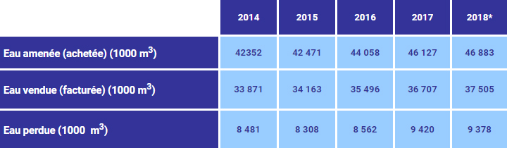

Espace Technique
Eau Potable
Production propre et achats à l’ONEP/branche eau
L’ONEE/Branche Eau gère l’ensemble des installations de production (la RAMSA ne dispose d’aucune production propre). L’évolution annuelle des volumes d’achats d’eau sur la période 2014 à 2018 est de l’ordre de 2,75%. Cette évolution soutenue des besoins en eau est due :
- au développement urbanistique que connait la ville d’Agadir
- Et à l’opération des branchements sociaux lancée par la Régie depuis 2002
Nous donnons, ci-après, l’évolution annuelle des achats auprès de l’ONEE/Branche Eau, de l'eau facturée et des pertes d’eau pour la période 2014 – 2018 :
© RAMSA
Realisation 2019